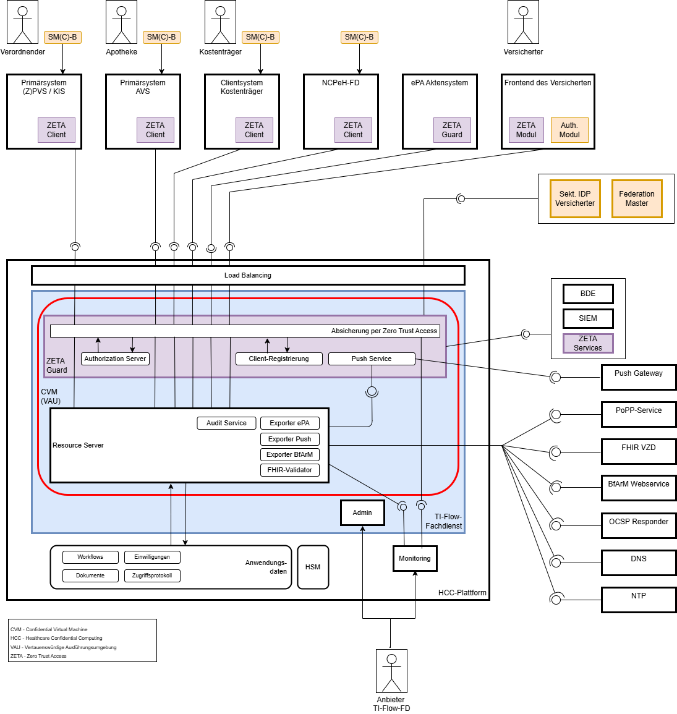

| Official URL: https://gematik.de/fhir/tiflow/ImplementationGuide/de.gematik.tiflow | Version: 2.0.0-ballot.2 | |||
| Draft as of 2026-05-25 | Computable Name: gemIG_TIFlow_core | |||
Seiteninhalt:
Dieser IG beschreibt die zentralen, IG-übergreifenden Anforderungen an den TI-Flow-Fachdienst. Er fasst grundlegende Sicherheits-, Protokollierungs- und Validierungsvorgaben zusammen, die in allen nachgelagerten IGs wiederverwendet werden.
Der TI-Flow-Fachdienst ist ein zentraler Ressourcenserver der Telematikinfrastruktur, der anwendungsübergreifende Workflows auf Basis des FHIR-Standards über eine RESTful API verwaltet.
Jeder Workflow wird über eine eindeutige Ressourcen-ID (Task-ID) adressiert und durchläuft ein definiertes Statusmodell. Der Fachdienst steuert die Statusübergänge und stellt sicher, dass nur zulässige, durch Nutzer initiierte Übergänge ausgeführt werden.
Alle Zugriffe auf einen Workflow werden für den zugeordneten Versicherten protokolliert. Die Datenhaltung erfolgt ausschließlich im Rahmen der gesetzlich zulässigen Speicherdauer.
Nach außen bietet der TI-Flow-Fachdienst seine Schnittstellen im Internet an und setzt für die Authentisierung und Autorisierung von Clientsystemen Zero Trust Access (ZETA) Mechanismen um. Ergänzend unterstützt er die asynchrone Übermittlung von Daten an Drittsysteme, etwa den ePA Medication Service.
Die Vertraulichkeit und Integrität der verarbeiteten Daten gewährleistet der Fachdienst durch das Konzept der vertrauenswürdigen Ausführungsumgebung (VAU). Diese sichert eine durchgängige Verschlüsselung der Verordnungen und zugehörigen Daten – während des Transports, der Verarbeitung und der persistierten Speicherung – durch eine Kombination kryptographischer Verfahren. Die VAU wird dabei nicht vom TI-Flow-Fachdienst selbst implementiert, sondern durch seinen Betrieb auf einem TI-Flow-Cluster, das als Healthcare Confidential Computing (HCC) Plattform dient und auch weiteren TI-Anwendungen zur Verfügung steht.

Hinweis: Die Anbindung des TI-Flow-Fachdienst an die ePA Aktensysteme erfolgt bis zu deren Unterstütztung von ZETA auf Basis der aktuellen Lösung.
Um die Funktionalität des TI-Flow-Fachdienst verständlich und adressatengerecht zu beschreiben wurden mehrere FHIR-Implementation Guides angelegt.
Dieser "IG TIFlow Kernfunktionalitäten" fokussiert auf die technische Basisschicht und Kernfunktionalitäten des Fachdienstes und beschreibt mehrfach verwendete Funktionalitäten sowie übergreifendes Verhalten:
Inhalte aus diesem IG werden dann in zwei weiteren Arten von IG's in der TI-Flow Landschaft weiterverwendet:
| Art des IG | Beschreibung |
|---|---|
| Modul IG | Diese Implementation Guides enthalten Inhalte zu einem Modul, bzw. Anwendung innerhalb des TI-Flow-Fachdienst. Diese werden über eine eigenen eigenen URL-Pfad adressiert und sind durch eine eigene Domäne und Akteure gekennzeichnet. Jede Workflow-Anwendung im TI-Flow-Fachdienst wird durch einen eigenen IG beschrieben, der auf Beschreibungen und Verhalten der Kernfunktionalitäten basiert. |
| Funktions IG | Diese Implementation Guides enthalten Beschreibungen zu Endpunkten und Funktionalitäten, die als Bausteine wiederverwendet werden können und daher zentral beschrieben werden. Sie existieren nicht als eigene Anwendung in der TI-Flow-Fachdienst landschaft. |
Dieser IG enthält nur die gemeinsamen Vorgaben. Fachliche und prozessspezifische Details werden in den jeweiligen IGs dokumentiert.